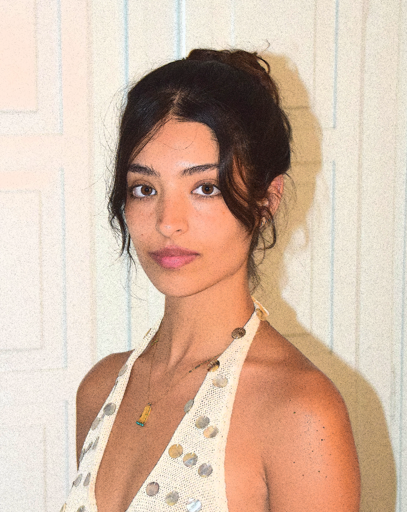

hi im, Odelia aVisual Designer.
Branding.
selected workJams.
branding projectA minimalist, medical-inspired branding and packaging concept that reimagines the visual language of clinical labels through a contemporary design approach. Clean grids, structured typography, and subtle handwritten details create a distinctive balance between clinical precision and everyday familiarity. created as part of a course at Bezalel Academy.
The Lion, the Witch and the Wardrobe.
branding projectA personal reimagining of "The Lion, the Witch and the Wardrobe", brought to life through an enchanted, fairytale-inspired visual language. Deep forest greens, vivid lime typography, and mysterious details capture the magic, wonder, and otherworldly atmosphere of this timeless fantasy world. created as part of a course at Bezalel Academy.
Graphic Design.
selected workPoor Things.
graphic design projectA poster design project inspired by the movie "Poor Things", exploring its distinctive visual world through imagery, typography, and composition. created as part of a course at Bezalel Academy.
National Library Poster 01.
graphic design projectA black-and-white typographic poster combining abstract structural cave elements for the National Library of Israel. created as part of a course at Bezalel Academy.
National Library Poster 02.
graphic design projectA conceptual poster to an imaginary event, a Vipassana Retreat at the National Library of Israel. created as part of a course at Bezalel Academy.
Im a star.
graphic design projectConcept design inspired by the movie "pearl", with an image created by me.
Art.
selected workDizengoff Square.
art projectA set of three acrylic paintings on wood depicting Dizengoff Square across three defining moments—before, during, and after October 7th. The series are a part of the archives of the Tel Aviv Museum of Art, reflecting on the transformation of a familiar urban space into a profound landscape of memory, resilience, and historical shift. created as part of a course at Bezalel Academy. Guided by Amit Trainin.
Motion Design.
selected workCount Down.
motion design projectCountdown inspired by molecular gastronomy. created as part of a course at Bezalel Academy.
Breath.
motion design projectTypography in motion. created as part of a course at Bezalel Academy.
Echo.
motion design projectTypography in motion. created as part of a course at Bezalel Academy.
Attraction.
motion design projectTypography in motion. created as part of a course at Bezalel Academy.
Panter.
motion design projectReaction to sound with motion graphics and hand drawn illustration and animation. created as part of a course at Bezalel Academy.
Girl From Greece.
motion design projectA motion design piece capturing a Greek girl at the sea. created as part of a course at Bezalel Academy.
Girl From Greece.
motion design projectA motion design piece capturing a Greek girl at the sea. created as part of a course at Bezalel Academy.
Girl From Greece.
motion design projectA motion design piece capturing a Greek girl at the sea. created as part of a course at Bezalel Academy.
Girl From Greece.
motion design projectA motion design piece capturing a Greek girl at the sea. created as part of a course at Bezalel Academy.
Arabian Nights.
motion design projectA stylized animation inspired by ancient egyptian motifs. created as part of a course at Bezalel Academy.
Web Design.
selected workSecret Fossil Archive.
web design projectAn interactive archive of my 25 fossil specimens collection. Each specimen opens its own page that reveals its origins.
visit the live site ↗


about me.
hi! im Odelia, a visual communications student at Bezalel academy of arts and design. I enjoy learning, creating and exploring new things. Let's work together!